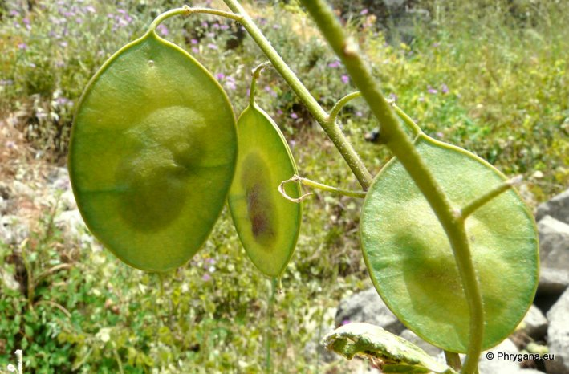
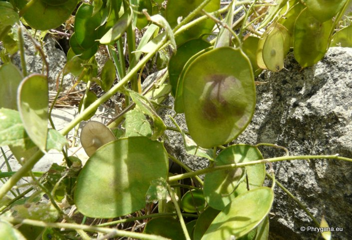
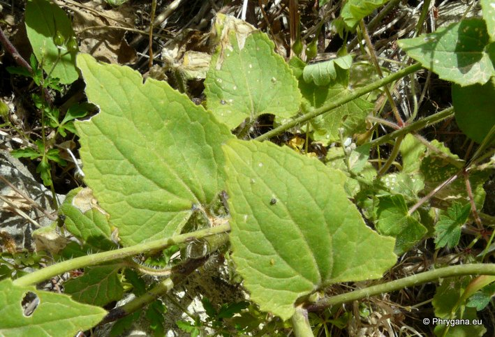

| PHRYGANA | Fauna | Flora | Galles | liste des espèces |
contact -
info - commentaires phrygana1 (at) gmail.com |
| Particularités crétoises | nouveautés | Mines | ressources naturelles |
| Lunaira annua subsp. pachyrhiza (BORBÁS) HAYEK |
| 458 | Flora | BRASSICACEAE BURNETT | Lunaria L. |
|  Lunaria annua subsp. pachyrhiza Arghiroupoli-Lappa 10 mai 2012 |
| (it) Lunaria meridionale - (en) White Money Plant | |
| Feuilles: plus ou moins sessiles, irrégulièrement et grossièrement dentées | |
| Tige dressée, un peu ramifiée; racines tubéreuses fusiformes | |
| Fleurs: couronne violet purpurin | |
| Fruit: une silique assez grande (30-45 mm), largement elliptique à presque ronde, avec les deux extrémités arrondies | |
| Hauteur: 40 - 100 cm | Type biologique: hémicryptophyte ramifié |
| Floraison: mars avril (-mai) | |
| Altitudes: 30 - 700 m | |
| Statut en Crète: indigène | |
| Biotopes en Crète: falaises humides, terrains vagues, lisières forestières | |
| Distribution: Europe méditerranéenne orientale, Balkans, Roumanie, Hongrie, Turquie | |
|
 Lunaria annua subsp. pachyrhiza Arghiroupoli-Lappa 10 mai 2012 |
|
 Lunaria annua subsp. pachyrhiza Arghiroupoli-Lappa 10 mai 2012 |
| 15 juin 2013 |
| © paul fontaine -- © Phrygana.eu 2007 -- 2013 |